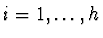
,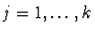
}.Let
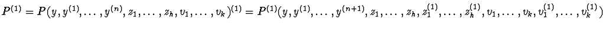
and let J1 be the ideal (P, P(1), zi(1)-Qi(1)zi, Rjvj(1)-Rj(1), , ) in the polynomial ring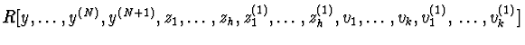
.Let
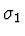
be the lexicographic term ordering on the set of power products in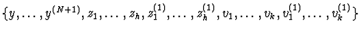
, with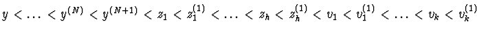
.
Let G1 be the reduced Gröbner basis of the ideal J1 with respect
to
[Buchberger (1976),Buchberger (1976)]. Since P(1)=
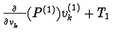
and Rkvk(1)-Rk(1) have degree one in vk(1), then P and S1=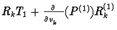
are in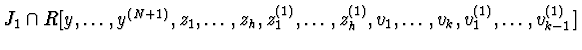
. So it is possible to eliminate vk(1)between P(1) and Rkvk(1)-Rk(1) and by using equalities zi(1)=Qi(1)zi a polynomial P1'=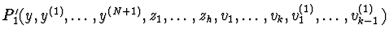
is obtained with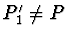
.If vk does not appear in P1', then P1' is in
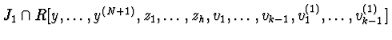
. If vk appears in P1', then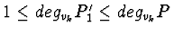
and the resultant of P and P1' with respect to the variable vk is in . So there exists at least one differential polynomial P1 in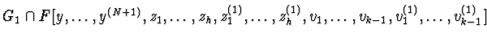
by definition of Gröbner basisLet G11=
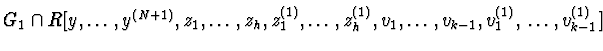
. Since G11 is the reduced Gröbner basis of J11=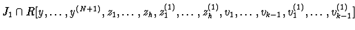
with respect to and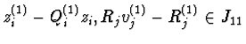
for all ,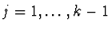
, then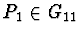
and P1=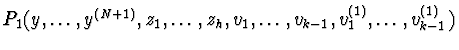
. If degvk-1(1)P1=d, then the pseudoremainder P1* of P1 with respect to Rk-1vk-1(1)-Rk-1(1) as polynomials in vk-1(1) is in J11 and vk-1(1) does not appear in P1*. So we can assume that P1= .
(i) By using the Ritt process of differential reduction for the extended characteristic set, it is sufficient to find the extended characteristic set of the differential polynomials Pand Rkvk(1)-Rk(1). It riquires the pseudo division of P(1) by Rkvk(1)-Rk(1) as polynomials in
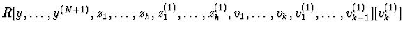
and the extended characteristic set of the partial remainder of the above pseudodivision R1 and P [Ritt (1950].(ii) By using the differential resultant theory, e.g. by finding the differential resultant of the differential polynomials P and Rkvk(1)-Rk(1), as differential polynomials in
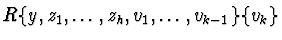
. By differential resultant theory such differential resultant is equal to the resultant of the polynomials P, P(1) and Rkvk(1)-Rk(1) in the polynomial ring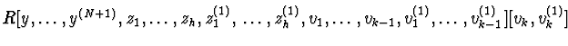
[Carra' Ferro (1997)].
(iii) By using the differential Gröbner basis theory with respect to
an elimination differential term ordering [Carra' Ferro (1987),Ollivier (1990)]
[Weispfenning (1993)].